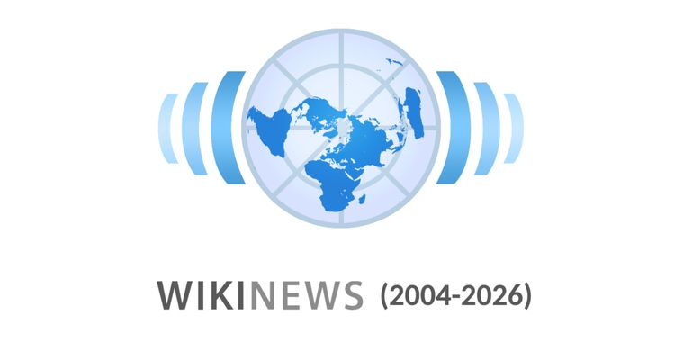

Wikimedia Foundation closes Wikinews after 21 years
2026, May 4
United States
The Board of Trustees of the Wikimedia Foundation announced on March 30 its decision to close all language editions of the project. In the announcement, a representative from Wikimedia Foundation cited motivations such as "long-term sustainability, levels of community activity, and the availability of reliable news coverage on other platforms". The announcement stated that all Wikinews editions—referring to the multiple language sections of Wikinews—would "transition to read-only mode" on May 4. The announcement did not mention the time zone when the wiki would go in read-only mode; but Wikinews operated under the UTC timezone.In the announcement message, WMF trustee Victoria Doronina said, "We thank all contributors who have participated in Wikinews over the years and helped build a unique experiment in collaborative journalism within the Wikimedia movement. We understand that some of them may be disappointed by this decision. To our regret, the project wasn't able to fulfil its promise, and many of its functions were eclipsed by the notable news coverage in Wikipedias."
According to the WMF, most traffic to Wikinews came in the form of web crawlers and bots, as opposed to humans. Per the Wikimedia Cloud statistics in the past one year, both, English and Chinese Wikinews received more traffic from humans as compared to crawlers. The foundation stated in its closure recommendation that it is "difficult to claim that it is disseminating educational content and, even more so, that it is doing so effectively and globally."
On March 31, users from different countries and regions started discussions regarding moving the Wikinews content and community to another website at Wikimedia's Meta-Wiki. Miraheze and Wikimedia NYC were in discussion of continuing the hosting as Wikinews Pulse, with a restructure to increase multilingual support and try new outputs, according to a note by a Wikimedia volunteer User:Pharos. However, at the time of publishing this report, they had not provided an estimated time the project would be restarted.
Wikinews was a sister project of other Wikimedia initiatives. Some of the other sister projects includes Wikipedia, Wiktionary, and Wikimedia Commons. All of these Wikimedia projects support the dissemination of free knowledge and media. The future of Wikinews was raised for consideration in June, with a WMF task force recommending the project's closure, followed by a period of public consultation about Wikinews. After this process, the Board announced in March that the 31 active editions of Wikinews would be placed in read-only mode indefinitely.
Wikinews was launched in November 2004. It was first proposed by an anonymous contributor in January 2003 and faced a community vote that ended 151 yea and 59 nay, leading to the first demo going live in October 2004. The English-language Wikinews was formally created December 2 of that year, with German following one day later.
The project's early development followed a series of community discussions and milestones in late 2004 and early 2005. A non-binding straw poll on content licensing began on October 26, 2004, alongside discussions on the project's scope and policies. The initial demo site, hosted at demo.wikinews.org, was later moved to the English Wikinews domain on December 2 of that year.
Following the launch of the English and German editions in December 2004, additional language editions were created in early 2005, including Dutch, French, Swedish, Spanish, Bulgarian, Polish, Romanian, and Portuguese. The project also adopted a logo in February 2005 through a community voting process.
While many Wikinews articles were synthesized from other news sources, the project also posted original reporting. The purpose of this activity was to add exclusive content which would not be available elsewhere on the web or on television. These original reports included interviews with people such as Shimon Peres, then-president of Israel; U.S. Senator Sam Brownback; journalist Gay Talese; and voice actor Billy West. A 2005 article featuring original reporting, Unrest in Belize, was cited by Wikipedia co-founder Jimmy Wales as Wikinews's first scoop.
In 2008, Wikinews introduced a volunteer peer review process, with users voting to elect peer reviewers. From that time, a volunteer reviewer would have to approve each news report before it would be published; which would add 'Published' category to the article and display the article on the main page and RSS feeds. For some time, among others, the late Brian McNeil and then the late Pi zero led the project until 2021.
In a 2010 interview, researcher Andrew Lih from University of Hong Kong Journalism and Media Studies Centre, commented, "[I]t's not clear that the wiki process really gears itself towards deadlines and group narrative writing. ... And I think that is providing some kind of a tension in terms of getting Wikipedians to write for an organization such as Wikinews." In 2013, a link to Wikinews was removed from the "In the News" section of the front page of Wikipedia, and links to Wikinews were also removed from the Current Events portal in that year.
Wikinews had also also been involved in university student education with University of Wollongong, for several years, with David Blackall, an academic at University of Wollongong, Faculty of Creative Arts.
At the time that the closure of Wikinews was announced, there were reportedly about 700 active editors among all 31 language editions combined.
Under WMF, Wikinews was available in the following languages:
Albanian
Arabic
Bosnian
Catalan
Chinese
Czech
Dutch
English
Esperanto
Finnish
French
German
Greek
Gun
Hebrew
Italian
Japanese
Korean
Limburgish
Norwegian
Persian
Polish
Portuguese
Romanian
Russian
Serbian
Shan
Spanish
Swedish
Tamil
Ukrainian